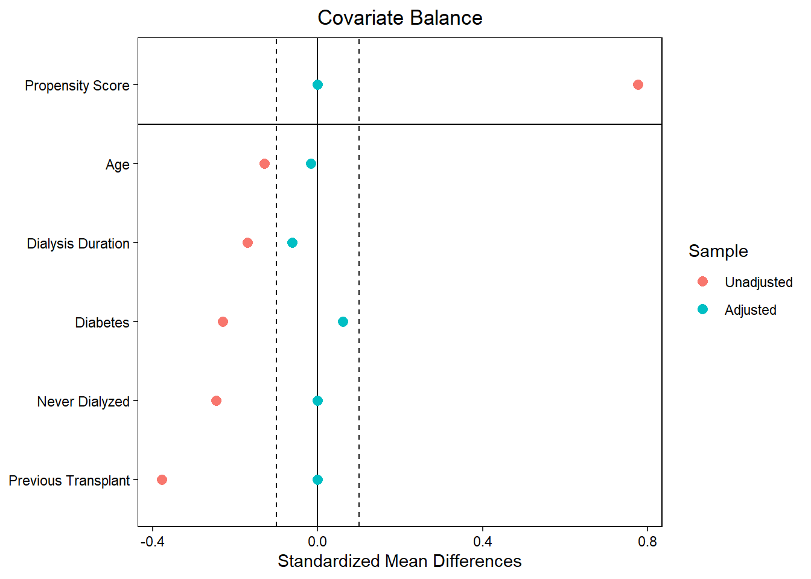

| PX_ID | enbloc_under8 | REC_AGE_AT_TX | dialysis_duration | no_dial | rec_diabetes | CAN_PREV_TX | |
|---|---|---|---|---|---|---|---|
| 1 | 1423051 | 0 | 46 | 1.7397260 | 0 | 0 | 0 |
| 33 | 1336277 | 0 | 64 | 0.0000000 | 1 | 1 | 0 |
| 46 | 1375918 | 0 | 25 | 0.0000000 | 1 | 0 | 1 |
| 73 | 1384452 | 0 | 51 | 0.0000000 | 1 | 1 | 0 |
| 80 | 1331786 | 0 | 66 | 2.7315068 | 0 | 1 | 0 |
| 101 | 1337163 | 0 | 43 | 1.8246575 | 0 | 0 | 0 |
| 104 | 1331806 | 0 | 67 | 0.4958904 | 0 | 1 | 0 |
| 106 | 1421143 | 0 | 51 | 0.0000000 | 1 | 0 | 0 |
| 107 | 1343445 | 0 | 43 | 0.6136986 | 0 | 0 | 0 |
| 109 | 1351642 | 0 | 57 | 0.9260274 | 0 | 0 | 0 |
Propensity score matching
Analysis
Kidney Allocation
R
In this post, we will explain the methodology and applications of propensity score matching.
The purpose of propensity score matching is to identify observations where the covariates that determine assignment to a particular group have similar values across different groups. In our example, we want to identify recipients of single kidney transplants whose Expected Post Transplant Survival (EPTS) characteristics are similar to those of recipients of en bloc kidneys. By identifying such patients, we will be able to better compare post-transplant survival outcomes by accounting for other possible confounding factors. In this case, these covariates are age, dialysis, diabetes, and previous transplant.
Note that we did not match based on donor characteristics. This is because after donor kidneys are assigned a sequence, they are treated equally to other kidneys in that sequence, so donor characteristics have no additional influence on assignment to each patient. When propensity score matching it is important to match only on those covariates which impact assignment of the treatment to each group.
Here’s a look at our dataframe:
PX_ID is a unique patient identifier
enbloc_under8 is an indicator for whether the patient received an en bloc kidney from a donor weighing < 8kg
REC_AGE_AT_TX is the recipient’s age at time of transplant
dialysis_duration is the time in years that a patient was on dialysis before transplant
no_dial is an indicator for whether the patient never received dialysis
rec_diabetes is an indicator for whether the patient had diabetes
CAN_PREV_TX is an indicator for whether the patient had received a transplant previously.
In this example, we are going to do 1-to-1 matching, where for each recipient of an ebloc from a donor < 8kg, we are finding 1 recipient of a sequence A SKT with similar characteristics. This is the most common form of propensity score matching but not the only (see Austin 2011)
To perform propensity score matching, we use the MatchIt library in R. To ensure that the covariates are sufficiently similar, we include cross terms that allow the standardized mean differences of the covariates to be < 0.1.
match_obj = matchit(enbloc_under8 ~ REC_AGE_AT_TX + dialysis_duration + no_dial + rec_diabetes + CAN_PREV_TX + REC_AGE_AT_TX*no_dial + REC_AGE_AT_TX*rec_diabetes, data = seq_a_data_under, method = "nearest", distance ="glm",
ratio = 1,
replace = FALSE)Model specifications:
method = “nearest” specifies nearest neighbor matching
distance = “glm” specifies the estimation of propensity scores using logistic regression
ratio = 1 specifies 1:1 matching
replace = “FALSE” specifies a unique SKT match for each en bloc recipient
To return a dataset from this matching process, use the match.data() function as follows:
match_data_under = match.data(match_obj)To visualize the standardized mean differences in the covariates, use the love.plot() function from the cobalt library
love.plot(match_obj, stats = "m", binary = "std", threshold = .1,
var.order = "unadjusted", var.names = v)
stats = “m” specifies the calculation of mean differences
binary = “std” specifies the standardized mean difference
threshold = 0.1 includes boundary lines at -0.1 and 0.1 to display the threshold
var.order = “unadjusted” displays the variables in order from smallest to largest unadjusted standardized mean difference
var.names = v displays the vector v that describes the variable names
As we can see in the love plot, without matching, recipients of en blocs from donors < 8kg have significantly different values of EPTS characteristics than recipients of sequence A SKTs. By matching on these characteristics, we are able to identify patients who have similar values for these characteristics, leading to standardized mean differences that are all below 0.1.
References:
Austin PC. An Introduction to Propensity Score Methods for Reducing the Effects of Confounding in Observational Studies. Multivariate Behav Res. 2011;46(3):399-424. doi:10.1080/00273171.2011.568786